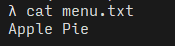

a Persistent Map
Turinys Git'o rep'e identifikuojamas ir randamas pagal jo "SHA1 Hash ID":
Every object in Git has its own SHA1.

Taip per CMD galima išvesti teksto eilutės "SHA1 Hash ID":
λ echo "kas tas" | git hash-object --stdin
be70cb5270aa55077bbee699494e4decca352604Persistent — reiškia išsaugoma failų sistemoje
Pridėjus opciją -w (arba --write), teksto eilutė (piece of content) bus išsaugota rep'e:
λ echo "kas tas" | git hash-object --stdin -w
be70cb5270aa55077bbee699494e4decca352604čia .git\objects\ sukuriamas katalogas, kuris pavadinamas pirmaisiais dvejais "SHA1 Hash ID" simboliais:
o tame kataloge sukuriamas failas, kuris pavadinamas su likusiais "SHA1 Hash ID" simboliais:

o pats turinys, t. y. teksto eilutė "kas tas", tame faile yra suarchyvuota, todėl atidarius redaktoriuje atrodo taip:
su > git cat-file, nurodydami rep'e išsaugoto objekto "SHA1 Hash ID", galima sužinoti to objekto charakteristikas:
- su opcija
-tišveda to objekto tipą: - o su opcija
-pišveda to objekto turinį, kuris pačiame faile yra suarchyvuotas:
a Stupid Content Tracker
- Pradinė situacija
-
Projekto (working tree) failai:

Failo
menu.txtturinys:
Failo
recipes\README.txtturinys:Failo
recipes\apple_pie.txtturinys: - Sukuriame rep'ą
-
λ git init Initialized empty Git repository in D:/webdev/learn.video-course.pluralsight-how-git-works/cookbook/.git/ - Pasitikriname
-
pažiūrime ir paslėptus failus-katalogus:
pažiūrime rep'o statusą:
- Kadangi žinome, kad visų failų projekte EOL == LF, pačiame rep'e nustatome:
-

- Visus failus padedame į "staging area"
- padarome commit'ą
- su
git logpažiūrime commit'ų istoriją —show commit logs
-
Kiekvienas commit'as išsaugomas rep'o objektų DB.
Katalogo pavadinamas — pirmieji du commit'o "SHA1 Hash ID" simboliai:
O failas jame pavadinamas su likusiais "SHA1 Hash ID" simboliais:
su
git cat-file -p <object-sha1>pažiūrime to failo turinį, jame pagrindinė informacija, kad commit'as sukūrė objektą:pažiūrime to objekto, t. y. failo tame kataloge, turinį — jame nurodyta kas buvo padėta į index'ą ir su'commit'inta:
a Revision Control System
a Distributed Revision Control System